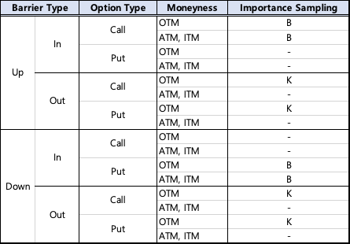
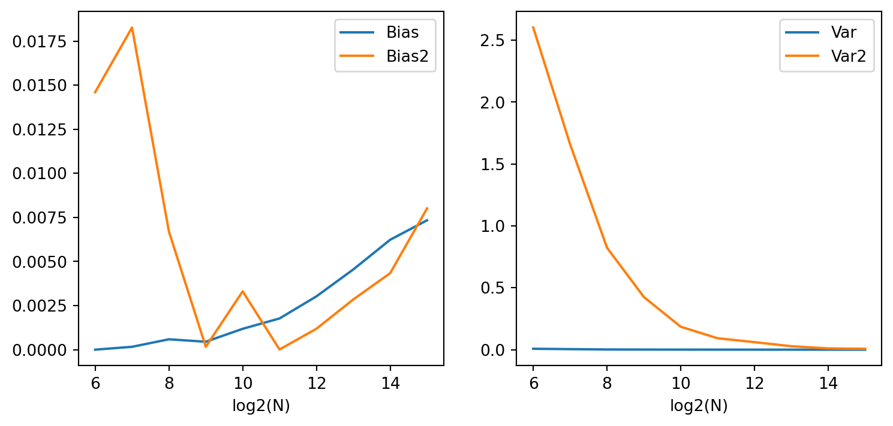

import numpy as np
import scipy.stats as sst
def mc_barrier_price(s, k, r, q, t, sigma, option_flag, n, b, barrier_flag, m):
# Set parameters
dt = t/m
dts = np.arange(dt, t+dt, dt)
barrier_up, barrier_out = barrier_flag.startswith('up'), barrier_flag.endswith('out')
option_call = option_flag.lower() == 'call'
option_type = 1 if option_call else -1
moneyness_otm = 1 if option_type * (k - (1 + option_type * 0.2 * np.sqrt(t) * sigma) * s) >= 0 else 0
# (1) Stratified sampling, z_t makes price at T & z makes brownian bridge
z_t = sst.norm.ppf((np.arange(n) + np.random.uniform(0,1,n)) / n)
z = np.random.randn(n,m)
# (2) Moment matching in z_t
z_t = np.where(n>=100, (z_t - z_t.mean()) / z_t.std(ddof=1), z_t - z_t.mean())
# (3) Antithetic variate
z_t, z = np.concatenate([z_t, -z_t], axis=0), np.concatenate([z, -z], axis=0)
# (4) Importance sampling at z_t
if barrier_out:
if moneyness_otm: mu = (np.log(k/s) - (r-q-0.5*sigma**2)*t) / (sigma*np.sqrt(t))
else: mu = 0 # Knock-out & ATM, OTM then importance sampling is not applied.
else:
if barrier_up + option_call == 1: mu = 0 # Down-In call & Up-In put are not applied.
else: mu = (np.log(b/s) - (r-q-0.5*sigma**2)*t) / (sigma*np.sqrt(t))
z_t = z_t + mu
likelihood_ratio = np.exp(-mu*z_t + 0.5*mu**2)
# Generate underlying paths using brownian bridge
w_t, w = z_t * np.sqrt(t), z.cumsum(axis=1) * np.sqrt(dt) # winner process
bridge = dts * ((w_t- w[:,-1]).reshape(len(w),1) + w / dts) # brownian bridge
paths = s*np.exp((r-q-0.5*sigma**2)*dts + sigma*bridge) # underlying price path
# Determine whether barrier touch or not (exists payoff or not)
if barrier_up: knock = paths.max(axis=1) >= b
else: knock = paths.min(axis=1) <= b
if barrier_out: knock = ~knock
# Caculate options payoff
plain_npv = np.maximum(option_type*(paths[:,-1]-k), 0) * np.exp(-r*t) * likelihood_ratio
barrier_npv = knock * plain_npv
# (5) Control variate using plain vanilla options
d1 = (np.log(s/k) + (r - q + 0.5*sigma**2)*t) / (sigma*np.sqrt(t))
d2 = d1 - sigma*np.sqrt(t)
nd1, nd2 = sst.norm.cdf(option_type*d1), sst.norm.cdf(option_type*d2)
plain_bsprice = option_type*(s*np.exp(-q*t)*nd1 - k*np.exp(-r*t)*nd2)
cov_npv = np.cov(barrier_npv,plain_npv,ddof=1)
beta = np.where(cov_npv[1,1]==0,0,cov_npv[0,1] / cov_npv[1,1])
barrier_CVnpv = barrier_npv - beta * (plain_npv - plain_bsprice)
barrier_price = barrier_CVnpv.mean()
return barrier_price시뮬레이션방법론 최종 과제
20249132 김형환
Question
베리어 옵션을 평가하는 몬테카를로 시뮬레이션 함수를 파이썬 코드로 작성하고, 함수에서 사용된 분산감소기법에 대해서 설명하는 보고서와 함께 제출하십시오.
Answer
산출 알고리즘 및 코드 구현
먼저, 제가 작성한 베리어 옵션 평가방법을 간단히 서술한 다음, 코드와 함께 사용한 분산감소기법을 서술하겠습니다.
- 주어진 input parameter에 따라서 베리어옵션 평가에 필요한 variable 정의
- \(dt = t/m\), 베리어 형태 / 옵션 종류 / 머니니스에 따른 논리인자 등
- (1) Stratified sampling을 적용하여 만기 t시점의 기초자산가격 생성할 표준정규분포난수 n개를 생성
- 이후, (2) Moment matching을 적용하여 생성한 표준정규난수를 표준화
- Knock 여부 판단을 위해 path별 m개의 관찰지점을 생성할 표준정규난수 n X m개 생성
- 만기시점과 path의 모든 난수에 대해 (3) Antithetic Variates를 적용하여 대치변수 생성
- 만기 시점의 난수에 (4) Importance sampling을 적용하여 평균을 B 또는 K 인근으로 변환
- GBM에 따른 만기 가격을 계산하고, brownian bridge로 path 생성(Terminal stratification)
- path별로 barrier knock 여부, 만기 가격에 따른 plain vanilla option payoff 계산
- 이 때, importance sampling의 likelihood ratio를 곱하여 발생확률을 보정
- knock 여부와 plain payoff를 통해 barrier option payoff를 계산
- 마지막으로, plain vanilla를 제어변수로 (5) Controal variates를 적용하고 최종 가격 산출.
이를 구현한 python 코드는 아래와 같습니다.
분산감소기법
(1) Stratified sampling
먼저, 가장 먼저 사용한 분산감소기법은 Stratified sampling입니다. 이는 특정분포를 따르는 난수를 생성할 때, 확률밀도함수의 형태와 유사하도록 계층을 나누어서 각 구간마다 난수를 생성하는 기법입니다.
저는 만기 시점의 기초자산가격에 대해서만 Stratified sampling을 적용하였는데, 이는 옵션의 가격결정이 만기 가격에 따라서 결정되므로 균질한 분포일수록 정확도가 높아 분산감소효과가 뛰어나기 때문입니다.
만기 이전의 path에 대해서도 계층화를 적용할 수 있으나, 이 path는 barrier knock 여부를 판단할 때에만 이용되어 계층화의 효과가 다소 떨어지며, 관찰 횟수 m이 작거나 베리어의 수준에 따라 오히려 편차(bias)를 증가시킬 수 있어 만기 가격에만 적용하였습니다.
먼저 균등분포를 따르는 난수를 생성한 다음, 각 구간(\(\frac{1}{n})\)에 속하도록 변환하고 표준정규분포 CDF의 역함수를 통해 표준정규난수로 만들었습니다. 이후 현재시점부터 만기까지의 가격경로는 Brownian bridge를 통해 구현하였습니다.(Terminal stratification)
(2) Moment matching
이렇게 생성한 만기 시점의 표준정규난수에 대해서 moment matching을 적용하였습니다. 난수 표준화를 통해 한번 더 확률밀도함수의 형태와 유사하도록 정해주는 방법입니다.
저는 \(z_t^*=\frac{z_t-\bar z_t}{s_{z_t}}\)를 이용하여 평균은 0, 표준편차는 1이 되도록 하였으며, 시뮬레이션 횟수가 100회 미만인 경우에는 \(z_t^*=z_t-\bar z_t\)만 적용하여 평균만 보정하였습니다. 이는 시뮬레이션 횟수가 적은 경우, 표본표준편차가 크거나 작게 산출될 수 있어 난수가 오염되고, 결과적으로 편향(bias)이 커질 수 있기 때문입니다.
전반적으로 moment matching의 분산감소의 효과가 크지는 않지만, 계산시간에도 큰 영향을 주지않아 활용하였습니다.
(3) Antithetic variate
다음으로, 생성한 난수에 대해 음의 값을 가지는 대칭난수를 생성하여 분산을 줄이는 기법입니다. 구현이 매우 간단하고 난수와 베리어옵션의 payoff의 선형관계가 강할 수록 분산감소효과가 크게 됩니다.
다양한 케이스에 따라 달라지기는 하지만, 기본적으로 옵션의 payoff는 기초자산의 가격에 비례하여 증가 또는 감소하므로 쉽고 효과적인 기법이 됩니다. 또한, python의 행렬연산 특성상 음의 난수를 복제하는 것은 난수를 2배로 생성하는 것보다 적은 시간이 소요되므로, 거의 모든 경우에 분산감소효과가 있어 적용하게 되었습니다.
만기시점의 가격과 path의 난수에 대해서 모두 적용하는데, 한가지 주의사항은 moment matching 보다 antithetic variates를 나중에 적용해야한다는 것 입니다. 먼저 적용하게 되면 moment matching의 평균 보정효과는 사라지고 음의 난수를 포함하여 표준편차를 계산할 때, 과대계상되면서 전체 난수가 오염되어 분산감소효과가 사라질 수 있습니다.
(4) Importance sampling
모든 기법 중에 가장 섬세하게 적용해야하는 중요도 샘플링(importance sampling)입니다. 이는 발생확률이 낮은 특정 사건이 목적함수에 크게 영향을 주는 경우, 기존 확률분포의 measure change를 통해 발생확률이 낮은 사건이 자주 sampling되게 만드는 기법입니다. 확률이 낮으나 영향이 큰 사건이 자주 sampling되므로, 시뮬레이션 횟수를 높이는 효과가 있어 편향(bias)를 크게 줄일 수 있습니다.
Importance Sampling의 유의사항
주의해야 할 점은 동일한 목적함수더라도 경우에 따라 분산을 증가시킬 수 있다는 점입니다. 예를 들어, plain vanilla 에 만기 가격의 평균이 K가 되도록 변환하면, OTM에서는 효과적이지만 ITM은 오히려 분산을 증가시키게 됩니다.
현재 moneyness가 ITM이면 옵션의 내재가치가 일정 이상이므로, 기초자산의 가격이 K까지 변할 때 내재가치가 0이 될지 여부는 옵션가격에 큰 영향을 미치지 않습니다. 오히려 현재 내재가치의 변동이 목적함수에 더 큰 영향을 주기 때문입니다.(\(\Delta\approx 1\))
반면, OTM에서는 내재가치가 0이기 때문에 향후 기초자산의 가격이 K까지 변하는지 여부가 목적함수에 큰 영향을 줍니다. 따라서 K에 대한 중요도 샘플링이 매우 효과적입니다. 따라서 중요도 샘플링을 적용할 때에는 기초자산의 분포, 목적함수의 형태, 현재 기초자산의 수준 등을 종합적으로 고려해야 합니다.
이제, 베리어옵션에 이를 적용해보겠습니다. plain vanilla와 달리 베리어옵션은 B와 K에 따라 payoff가 결정됩니다. 이 구조는 B라는 행사가격을 가진 lookback옵션과 asset(options with strike K)-or-nothing binary옵션이 결합된 상품으로 이해할 수 있습니다. 즉, 먼저 B의 행사가격을 가진 옵션에 따라 payoff가 발생하는지 판단하고, 발생한다면 만기시점의 가격과 K를 비교하여 payoff가 결정됩니다,.
따라서, 저는 중요도 샘플링을 적용할 때 Barrier price, B를 먼저 고려하였습니다. OTM인 경우에만 효과가 나타나므로, Knock-In일 때 만기 가격의 평균이 B가 되도록 변환하였습니다. 다음으로 Knock-Out이면 일정 OTM수준 미만의 moneyness에만 만기 가격이 K가 되도록 변환했습니다. 이외의 경우는 적용하지 않았습니다.
또한, Knock-In일지라도 Up-In Put / Down-In Call은 중요도 샘플링을 적용하지 않았습니다. 두 경우는 Knock이 되더라도 그 반대로 주가가 크게 움직여야 payoff가 발생하게 되어 가격이 매우 낮은 케이스인데, 이 때에는 B로 평균을 변환하는 것이 적절하다고 보기 어렵기 때문입니다.
정규분포와 같은 Bell-shape은 이러한 양 극단으로 움직여야하는 분포를 모델링하기 어려우므로, 양 극단을 잘 나타내는 다른 분포로 변환하는 등의 방법을 고려해야 합니다.. 다만, 계산이 매우 복잡하고 분산감소효과를 담보할 수 없어 이러한 경우에는 중요도 샘플링을 배제하였습니다.

(5) Control variates
가장 분산감소효과가 뛰어났던 제어변수(contral variates) 기법입니다. 이는 목적함수와 상관관계가 높은 다른 변수중에서, 그 변수의 기대값이 이미 알려져 있는 경우 사용할 수 있는 기법입니다. 목적함수와 변수의 민감도 \(\beta\)와 알려진 변수의 기대값을 통해 시뮬레이션의 편차를 간접적으로 줄여서 성능을 개선하는 방식을 말합니다.
산출알고리즘에서, 베리어옵션의 가격은 plain vanilla의 payoff와 barrier knock 여부를 통해 계산됩니다. 이 식에서 plain과 베리어 간에 양의 상관관계가 있음을 알 수 있습니다. 또한 barrier in-out parity(\(options = options_{in}+options_{out}\))를 통해 plain옵션이 베리어 옵션 상관관계가 있음을 유추할 수 있습니다.
따라서, plain option을 제어변수로 활용하였고, 그 기대값으로는 BSM formula(\(S_0N(d_1)-Ke^{-rT}N(d_2)\))를 이용해 control variates를 적용하였습니다. Out옵션에서는 베리어가 멀수록, In옵션에서는 베리어가 가까울수록 상관관계가 커져 제어변수가 매우 효율적이였으며, 반대일수록 효과가 떨어졌으나 계산시간에 비해 효과가 뛰어나 항상 적용하였습니다.
분산감소 등 효과 예시
이에 따라 일반적은 MCS방법과 기법을 적용한 위 함수의 효과를 간단히 비교한 결과는 아래와 같습니다.
---------- Up-In Call options, S=100, K=110, B=120 ----------
(Calculation time) Improved MCS : 0.023, Normal MCS: 0.012
N M Bias Var MSE Bias2 Var2 \
0 64.0 1024.0 4.041357e-07 0.007233 0.007234 0.014606 2.602447
1 128.0 512.0 1.623339e-04 0.004279 0.004441 0.018272 1.659111
2 256.0 256.0 5.885280e-04 0.001430 0.002018 0.006704 0.823746
3 512.0 128.0 4.498964e-04 0.000773 0.001223 0.000162 0.425432
4 1024.0 64.0 1.183251e-03 0.000378 0.001562 0.003306 0.185168
5 2048.0 32.0 1.770690e-03 0.000208 0.001978 0.000011 0.092179
6 4096.0 16.0 3.023580e-03 0.000058 0.003081 0.001185 0.060652
7 8192.0 8.0 4.550640e-03 0.000026 0.004576 0.002847 0.027776
8 16384.0 4.0 6.234626e-03 0.000006 0.006241 0.004339 0.010220
9 32768.0 2.0 7.339769e-03 0.000002 0.007342 0.008010 0.007100
MSE2
0 2.617053
1 1.677383
2 0.830450
3 0.425594
4 0.188474
5 0.092190
6 0.061837
7 0.030623
8 0.014559
9 0.015111 
계산시간은 약 2배 증가하였으나 이를 고려하더라도 편향, 분산, MSE에서 전반적으로 개선된 성능을 보여주었습니다.